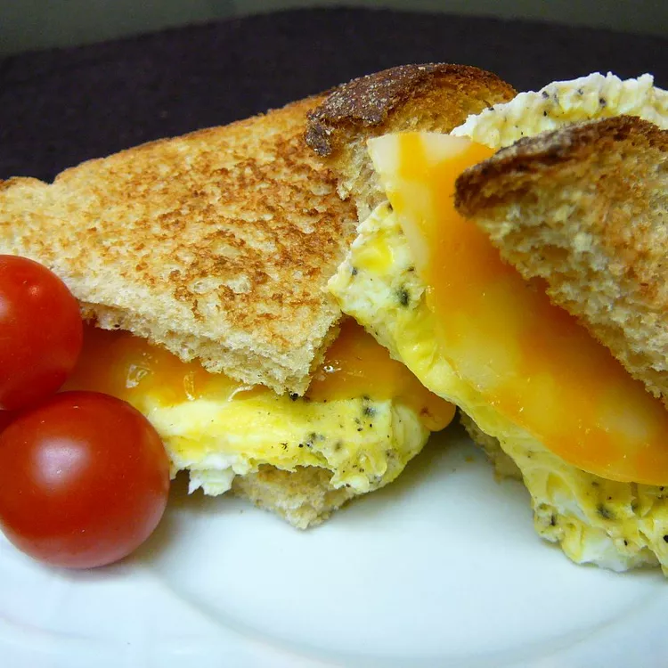

Egg Sandwich
Home

Description
Nature's natural vitamin in an egg sandwich. A healthy, versatile breakfast or lunch
Ingredients
- 1 egg
- 1 tablespoon milk
- 2 slices white bread
- 1 pinch salt and pepper to taste
- 1 slice American cheese
Steps
- Crack the egg into a microwave-safe cereal bowl and whisk in the milk. Season with salt and pepper. Cook in the microwave on 100% power for 1 to 2 minutes, or until cooked through.
- While the egg is cooking, toast the bread. Use a spoon to remove the cooked egg from the bowl and set it on one piece of toast. Top with a slice of cheese and the other piece of toast. Cook in the microwave until cheese is melted, about 15 seconds.